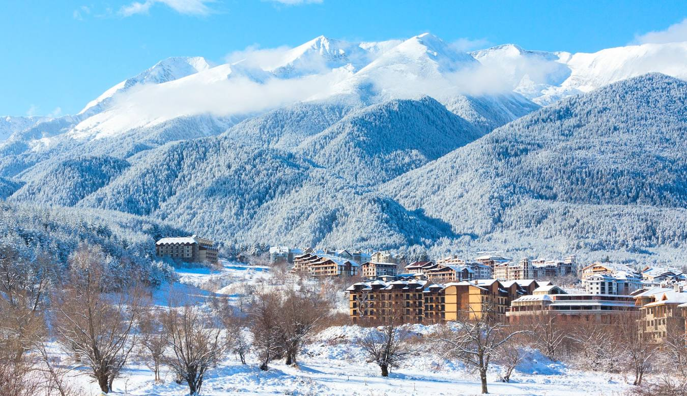
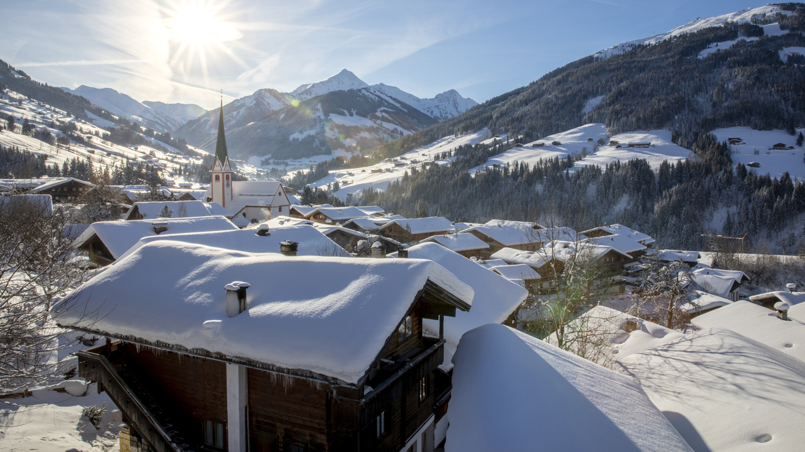
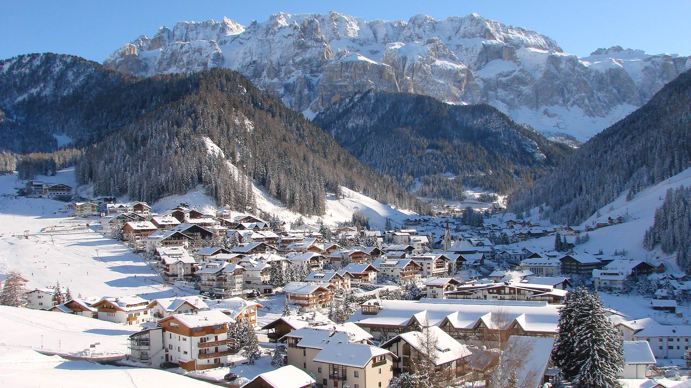

Are you planning a ski trip in Europe? But don't know where to go or how much it will be. I have been skiing for basically my whole life and understand the struggle to go skiing while worrying about price and lodge because skiing is a very popular hobby so finding a place to stay and a way to keep the price down is quite a challenge. Don’t worry below will be a list of the most expensive and the least expensive resorts, complete with mountain stats and accommodation costs. Also I’ll be answering the question, does cost and the size of the mountain correlate to each other, to help you get a better understanding of where you might want to stay. Ready to hit the slopes. Join Me on a Skiing Adventure Across Europe
Hi, I'm Alex, a ski enthusiast who turned my passion into a quest to explore Europe's most stunning ski resorts. From the snowy peaks of Austria to the charming slopes of Italy, join me as I recount my experiences and share the secrets of each destination.
Cheapest Skiing Destinations
10. Bardonecchia, Italy
Where to Stay: Residence Tabor, Bardonecchia, Italy
Stats: 23 Lifts and 42 Runs.
Price: Overall cost for trip - $605
My first stop was Bardonecchia. I still remember the thrill of gliding down its inviting slopes and the cozy evenings at Residence Tabor. The combination of affordability and enchanting trails made it a perfect start to my skiing journey.
9.Bansko, Bulgaria
Where to Stay: Hotel-Mura, Bansko, Bulgaria
Stats: 24 Lifts and 14 Runs.
Price: Overall cost for trip - $622
Bansko surprised me with its blend of tradition and modernity. Staying at Hotel Mura, I marveled at the picturesque landscapes and well-groomed slopes. It's a hidden gem where culture and skiing merge beautifully.
8. Borovets, Bulgaria
Where to Stay: Hotel-Samokov, Borovets, Bulgaria
Stats: 18 Lifts and 15 Runs.
Price: Overall cost for trip - $631
Borovets, with its lively atmosphere and challenging runs, was an exhilarating stop. Hotel Samokov was a cozy retreat after thrilling days on the slopes. It's the perfect place for skiers who seek adventure and a vibrant night scene.
7. Arinsal, Andorra
Where to Stay: Hotel-Xalet-Besoli, Arinsal, Andorra
Stats: 30 Lifts and 42 Runs.
Price: Overall cost for trip - $656
In Arinsal, I found a family-friendly paradise. Hotel Xalet Besoli offered warm hospitality, and the slopes were perfect for both beginners and seasoned skiers. It's where families can create lasting winter memories.
6. Mayrhofen, Austria
Where to Stay: Hotel-Obermair, Mayrhofen, Austria
Stats: 52 Lifts and 133 Runs.
Price: Overall cost for trip - $661
Mayrhofen was a blend of diverse terrains and vibrant après-ski life. Hotel Obermair provided a comforting base to explore the extensive runs and breathtaking views. It's a place that caters to all skiing desires.
5.Canzei, Italy
Where to Stay: Hotel-Cesa-Rotic, Canazei, Italy
Stats: 58 Lifts and 74 Runs.
Price: Overall cost for trip - $706
Canazei captivated me with its Italian charm and stunning Dolomites scenery. Hotel Cesa Rotic was my gateway to exploring the Sella Ronda circuit. It's a destination where Italian flair meets world-class skiing.
4.Courmayeur, Italy
Where to Stay: Hotel-Dei-Camosci, Courmayeur, Italy
Stats: 16 Lifts and 22 Runs.
Price: Overall cost for trip - $728
Courmayeur's allure lies in its luxurious setting at the foot of Mont Blanc. My stay at Hotel Dei Camosci was filled with spectacular views and exquisite dining. It's where elegance and mountain thrill meet.
3.Alpbach, Austria
Where to Stay: Pension-Furstenhof, Alpbach, Austria
Stats: 47 Lifts and 69 Runs.
Price: Overall cost for trip - $728
Alpbach was a tranquil retreat, with its picturesque village and serene slopes. Staying at Pension Furstenhof, I enjoyed the quiet charm and friendly community. It's ideal for those seeking a peaceful ski getaway.
2. Selva-Val-Gardena, Italy
Where to Stay: Garni-Romantica, Selva-Val-Gardena, Italy
Stats: 81 Lifts and 59 Runs.
Price: Overall cost for trip - $749
Selva-Val-Gardena was breathtaking, nestled in the heart of the Dolomites. Garni Romantica was the perfect home base for days filled with extensive skiing and exploring. It's where natural beauty and skiing adventures converge.
S1.Pas-De-La-Casa, Andorra
Where to Stay: Hotel-De-Les-Pistes, Pas-De-La-Casa, Andorra
Stats: 63 Lifts and 100 Runs.
Price: Overall cost for trip - $758
Pas-De-La-Casa was the apex of my Andorran skiing experience. Hotel De Les Pistes provided a comfortable stay with easy access to diverse runs. It's a destination that combines excitement and affordability.
Most Expensive Skiing Destinations
10.St-Anton, Austria
Where to Stay: Anthonys-Hotel, St-Anton, Austria
Stats: 88 Lifts and 304 Runs.
Price: Overall cost for trip - $2053
My time in St-Anton at Anthonys Hotel was like stepping into a skiing paradise. With 88 lifts and 304 runs, it was an exhilarating experience, blending world-class skiing with vibrant après-ski culture.
9. Saariselka, Finland
Where to Stay: Star-Arctic-Hotel, Saariselka, Finland
Stats: 5 Lifts and 12 Runs.
Price: Overall cost for trip - $2188
At Saariselka, the Star Arctic Hotel was my gateway to a unique polar experience. The resort, with its 5 lifts and 12 runs, offered a magical blend of Nordic charm and serene Arctic landscapes.
8. Solden, Austria
Where to Stay: Hotel-Central, Solden, Austria
Stats: 33 Lifts and 40 Runs.
Price: Overall cost for trip - $2195
In Solden, staying at Hotel Central provided access to an impressive ski area with 33 lifts and 40 runs, set against a backdrop of stunning Alpine scenery and lively après-ski activities.
7. Levi, Finland
Where to Stay: Design-Hotel-Levi, Levi, Finland
Stats: 27 Lifts and 43 Runs.
Price: Overall cost for trip - $2221
Levi's Design Hotel was a luxurious retreat in the heart of Lapland. The resort, with its 27 lifts and 43 runs, offered a unique blend of Finnish tranquility and adventurous skiing.
6. Meribel, France
Where to Stay: Hotel-La-Chaudanne, Meribel, Fance
Stats: 183 Lifts and 328 Runs.
Price: Overall cost for trip - $2228
Meribel, with Hotel La Chaudanne, was an indulgence in the Three Valleys. With 183 lifts and 328 runs, it epitomized luxury skiing with its vast slopes and exclusive ambiance.
5.Tignes-Le-Lac, France
Where to Stay: Village-Montana-Suites, Tignes-Le-Lac, France
Stats: 89 Lifts and 154 Runs.
Price: Overall cost for trip - $2301
At Tignes-Le-Lac, Village Montana Suites offered a modern ski experience with direct slope access. Its 89 lifts and 154 runs catered to all levels, set against the breathtaking French Alps.
4. Obergurgl, Austria
Where to Stay: Hotel-Hochfirst, Obergurgl, Austria
Stats: 24 Lifts and 40 Runs.
Price: Overall cost for trip - $2341
Obergurgl, with its exclusive Hotel Hochfirst, offered a high-altitude ski experience. The resort's 24 lifts and 40 runs were perfect for those seeking both tranquility and exhilarating ski slopes.
3. Val-Thorens, France
Where to Stay: Hotel-Fitz-Roy, Val-Thorens, France
Stats: 183 Lifts and 321 Runs.
Price: Overall cost for trip - $2438
Val-Thorens, home to Hotel Fitz Roy, stood as the pinnacle of French skiing. With 183 lifts and 321 runs, it was a haven for ski enthusiasts seeking the ultimate in slope variety and luxury.
2.Ischgl, Austria
Where to Stay: Hotel-Fliana, Ischgl, Austria
Stats: 48 Lifts and 98 Runs.
Price: Overall cost for trip - $2733
Ischgl was a revelation in luxury skiing, and Hotel Fliana was the perfect base. Its 48 lifts and 98 runs offered a diverse skiing experience, matched with high-end amenities and vibrant nightlife.
1. HinterGlemm, Austria
Where to Stay: Hotel-Alpine-Palace, Hinterglemm, Austria
Stats: 54 Lifts and 64 Runs.
Price: Overall cost for trip - $2769
At Hinterglemm, the Hotel Alpine Palace set the bar for luxury skiing. The resort's 54 lifts and 64 runs provided an exclusive ski experience amidst the stunning beauty of the Austrian Alps.
As I journeyed through these resorts, I started noticing patterns. Were the more expensive resorts really offering more? Analyzing data on prices and piste lengths, I uncovered some surprising trends.
Every resort I visited left me with unforgettable memories and lessons. Whether it's the luxurious charm of Courmayeur or the rustic allure of Alpbach, there's a story waiting for you in the snowy embrace of these mountains. Where will your story begin?
---------------------------------------------------------------------------------------------If you are going on vacation, which hotels give the best price for size? Total length of pistes (in km): Is there a correlation between the size of the ski area and the price?
My Data
Measure: Mean of the price and piste Value: price(£):1095.027027($1192.57) totalPiste(km): 220.270270
What does this tell me?: This is the average mean between the price and piste. This shows the average price and average Piste
----------------------------------------------------------------------------------------------------------------------------------------------------------------
Measure: Person Correlation Coefficient between Ski Area Size and Price:
Value: 0.16
What does this tell me?: Since this number is very low, it means that the correlation is very low. If the number was higher (around 0.4-0.5), it would indicate a stronger correlation.
----------------------------------------------------------------------------------------------------------------------------------------------------------------
Measure: Median for price
Value: The median price is: £1021.00($1111.95)
What does this tell me?: The median price for ski resorts
----------------------------------------------------------------------------------------------------------------------------------------------------------------
My Visualizations